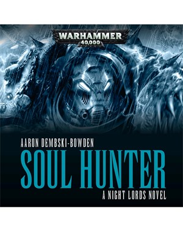
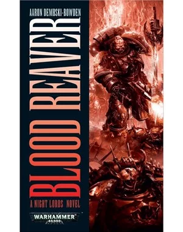
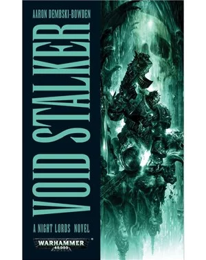

Boek 1: Soul Hunter
Schrijver: Aaron Dembski-BowdenPublicatiejaar: 2010 Het verhaal: De Night Lords behoorden ooit tot de krachtigste strijdmachten van het Keizerrijk die angst zelf als hun wapen gebruikten. Nu, weggekeerd van het licht van de Keizer en opgejaagd als ketters na hun monsterlijke verraad, kleden ze zich in symbolen van de dood en ze vechten de ze de Lange Oorlog, dood en verderf zaaiend onder allen die de lijk-god van Terra aanbidden. Een dagvaarding van Warmaster Abaddon stuurt deze rebellen op een gevaarlijke reis die onverbiddelijk ledit tot een confrontatie met de door de Keizer gekozen krijgers: de Blood Angels.
Boek 2: Blood Reaver
Schrijver: Aaron Dembski-BowdenPublicatiejaar: 2011 Het verhaal: Gedreven door hun haat tegen de Onechte Keizer volgen de Night Lords de schaduwen van de Melweg, eeuwig op zoek naar wraak voor de dood van hun Primarch. Hun duistere zoektocht leidt hen naar een gemelige alliantie met de Red Corsairs, alleen verenigd door een gemeenschappelijke vijand. Samen met deze piratenbende van afvalligen gaan ze naar het fort-klooster van de vijand om hun methodes van vernietiging te tonen.
Boek 3: Void Stalker
Schrijver: Aaron Dembski-BowdenPublicatiejaar: 2012 Het verhaal: De jagers zijn de opgejaagden geworden. De Night Lords vluchten naar de donkere grenzen van het Keizerrijk om hun meedogenloze achtervolgers, de Eldar van Craftworld Ulthwe, af te schudden. Hun vlucht brengt hen naar Tsagualsa, waar hun primarch stierf en hun legioen werd gebroken. daar zal de geschiedenis zich herhalen als een dodelijke moordenaar door de schaduwen sluipt en de Night Lords in een slag terechtkomen die ze voortbestemd zijn te verliezen.